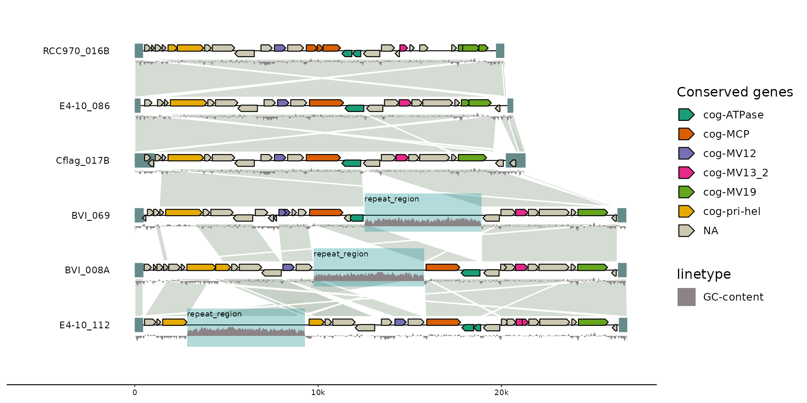
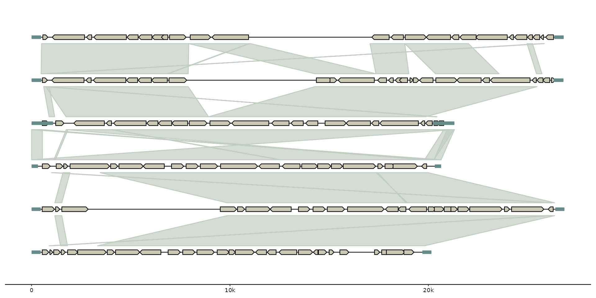
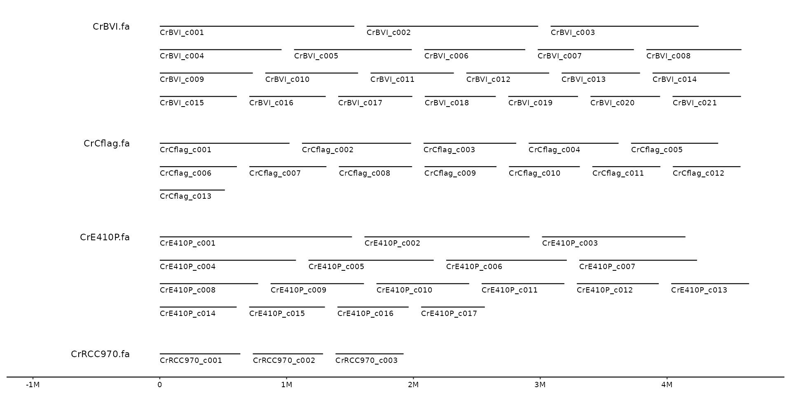

Plot genomes, features and synteny maps
gggenomes( genes = NULL, seqs = NULL, feats = NULL, links = NULL, .id = "file_id", spacing = 0.05, wrap = NULL, adjacent_only = TRUE, infer_bin_id = seq_id, infer_start = min(start, end), infer_end = max(start, end), infer_length = max(start, end), theme = c("clean", NULL), .layout = NULL, ... )
Arguments
| genes, feats | A data.frame, a list of data.frames, or a character vector with paths to files containing gene data. Each item is added as feature track. For a single data.frame the track_id will be "genes" and "feats", respectively. For a list, track_ids are parsed from the list names, or if names are missing from the name of the variable containing each data.frame. Data columns:
|
|---|---|
| seqs | A data.frame or a character vector with paths to files containing sequence data. Data columns:
|
| links | A data.frame or a character vector with paths to files containing link data. Each item is added as links track. Data columns:
|
| .id | The name of the column for file labels that are created when reading directly from files. Defaults to "file_id". Set to "bin_id" if every file represents a different bin. |
| spacing | between sequences in bases (>1) or relative to longest bin (<1) |
| wrap | wrap bins into multiple lines with at most this many nucleotides per lin. |
| infer_length, infer_start, infer_end, infer_bin_id | used to infer pseudo seqs if only feats or links are provided, or if no bin_id column was provided. The expressions are evaluated in the context of the first feat or link track. By default subregions of sequences from the first to the last feat/link
are generated. Set |
| theme | choose a gggenomes default theme, NULL to omit. |
| .layout | a pre-computed layout from |
Value
gggenomes-flavored ggplot object
Examples
# Compare the genomic organization of three viral elements # EMALEs: endogenous mavirus-like elements (example data shipped with gggenomes) gggenomes(emale_genes, emale_seqs, emale_tirs, emale_ava) + geom_seq() + geom_bin_label() + # chromosomes and labels geom_feat(size=8) + # terminal inverted repeats geom_gene(aes(fill=strand), position="strand") + # genes geom_link(offset = 0.15) # synteny-blocks# with some more information gggenomes(emale_genes, emale_seqs, emale_tirs, emale_ava) %>% add_feats(emale_ngaros, emale_gc) %>% add_clusters(emale_cogs) %>% flip_by_links() + geom_link(offset = 0.15, color="white") + # synteny-blocks geom_seq() + geom_bin_label() + # chromosomes and labels # thistle4, salmon4, burlywood4 geom_feat(size=6, position="identity") + # terminal inverted repeats geom_feat(data=feats(emale_ngaros), color="turquoise4", alpha=.3, position="strand", size=16) + geom_feat_note(aes(label=type), data=feats(emale_ngaros), position="strand", nudge_y = .3) + geom_gene(aes(fill=cluster_id), position="strand") + # genes scale_fill_brewer("Conserved genes", palette="Dark2", na.value = "cornsilk3") + #scale_fill_viridis_b() + geom_ribbon(aes(x=(x+xend)/2, ymax=y+.24, ymin=y+.38-(.4*score), group=seq_id, linetype="GC-content"), feats(emale_gc), fill="lavenderblush4", position=position_nudge(y=-.1)) #> Joining, by = "feat_id" #> Flipping: 2,3,4  # initialize plot directly from files gggenomes( ex("emales/emales.gff"), ex("emales/emales.gff"), ex("emales/emales-tirs.gff"), ex("emales/emales.paf") ) + geom_seq() + geom_gene() + geom_feat() + geom_link() #> Reading 'gff3' with `read_gff3()`: #> * file_id: emales [/home/runner/work/_temp/Library/gggenomes/extdata/emales/emales.gff] #> Harmonizing attribute names #> • ID -> feat_id #> • Name -> name #> • Note -> note #> Features read #> # A tibble: 1 × 3 #> source type n #> <chr> <chr> <int> #> 1 MFG CDS 143 #> Reading 'gff3' with `read_gff3()`: #> * file_id: emales-tirs [/home/runner/work/_temp/Library/gggenomes/extdata/emales/emales-tirs.gff] #> Harmonizing attribute names #> • ID -> feat_id #> • Name -> name #> Features read #> # A tibble: 1 × 3 #> source type n #> <chr> <chr> <int> #> 1 MFG repeat_region 12 #> Reading 'paf' with `read_paf()`: #> * file_id: emales [/home/runner/work/_temp/Library/gggenomes/extdata/emales/emales.paf] #> Warning: Found tags in max_tags column, you should increase max_tags to #> Read and tidied up a .paf file with 10 optional tag fields: #> NM, ms, AS, nn, tp, cm, s1, de, rl, cg #> Note: warnings about fewer than expected columns are expected for this format. #> Reading 'gff3' with `read_seq_len()`: #> * file_id: emales [/home/runner/work/_temp/Library/gggenomes/extdata/emales/emales.gff]  # multi-contig genomes wrap to fixed width s0 <- read_seqs(list.files(ex("cafeteria"), "Cr.*\\.fa", full.names = TRUE)) #> Reading 'fasta' with `read_seq_len()`: #> * file_id: CrBVI [/home/runner/work/_temp/Library/gggenomes/extdata/cafeteria/CrBVI.fa] #> * file_id: CrCflag [/home/runner/work/_temp/Library/gggenomes/extdata/cafeteria/CrCflag.fa] #> * file_id: CrE410P [/home/runner/work/_temp/Library/gggenomes/extdata/cafeteria/CrE410P.fa] #> * file_id: CrRCC970 [/home/runner/work/_temp/Library/gggenomes/extdata/cafeteria/CrRCC970.fa] s1 <- s0 %>% filter(length > 5e5) gggenomes(seqs=s1, infer_bin_id=file_id, wrap=5e6) + geom_seq() + geom_bin_label() + geom_seq_label() 